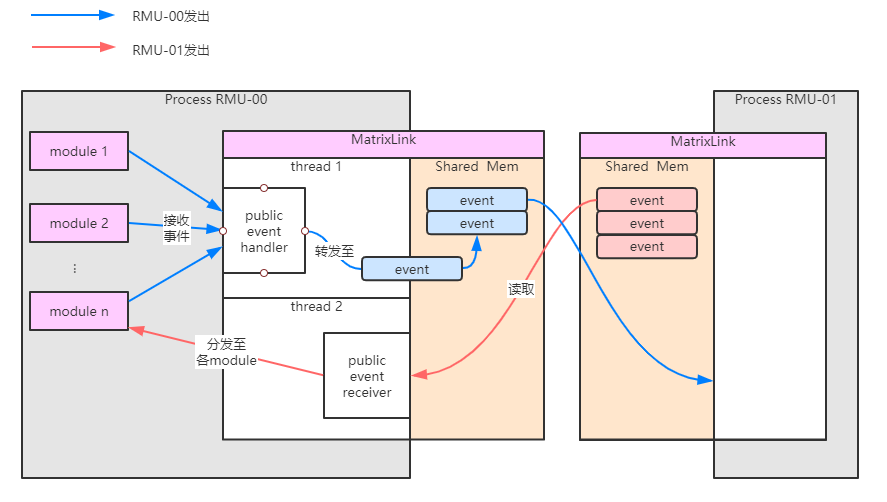

跨进程event
跨进程event组件
跨进程event是RMU3.0框架中的一个新特性，它扩展了event的传播范围，使得一个event不仅仅可以在RMU3.0的module之间传播，还可以被其它同样运行RMU3.0框架的进程接收。
对于RMU，一个基本的认知是它包含许多的module，每个module负责不同的功能模块。显然，不同的功能之间稳定性、重要程度、耦合度是不一样的，例如管理网络连接的module稳定性几乎肯定要强于采集视频的module。
这促使我们思考如何避免一个不稳定的module影响原本稳定的module——在module运行出现问题时，几乎一定会导致整个进程的崩溃。那么显然的解法是划分多个线程，每个线程运行一组功能相关的module，例如一种最简单的划分方式，一个进程负责基础系统功能保障——网络、核间通信、电源管理等，另一个进程负责业务逻辑——计算、采集、处理。
那么多个进程之间一定要有一种互相通信的方式，这种方式应该具有以下特点：
- 高效，不复杂；
- 只携带极少量数据——对于涉及大量数据交互的module，毫无疑问应该放在同一个进程中，这样他们可以高效地共享数据；
- 对于一般开发者，使用起来应该尽可能简便；
跨进程event正是基于以上的考虑而诞生的新组件。它使用了共享内存，在RMU3.0进程之间高效地（只是相对的，尽管我这么说，你仍然不应该让跨进程event携带大量数据）收发事件，它有如下特性：
- 自动注册和反注册：当RMU启动时，自动地寻找当前已经启动的其它RMU进程，并建立通信；自动地处理其它RMU进程的加入和离开；
- 划分私有event和公共event：如果你希望这个event被跨进程传播，或者不希望，都是可以做到的；
- 使用便利，和一般的event没有任何区别；
它还存在如下问题：
- 不具备用跨进程event传输大量数据的能力；
- 不同RMU进程之间的公共event列表需要统一，意味着需要跨项目维护一两个文件；
公共event的创建
公共event是指用于跨进程传播的event。如果你在module内发送了一个公共event，那么它将传播到系统中所有的RMU3.0进程；如果你在module内监听了一个公共event，那么也能收到从别的RMU3.0进程发来的该event。
创建公共event和创建一个普通event没有什么区别，但要注意的是你需要将event创建在public/public_events.h和public/public_events.cc中。例如：
public_events.h
enum PublicEventIds {
kPublicEventMin,
/* Add new events below */
kPEventTest,
/* sentinel */
kPublicEventMax
};
struct PEventTest {
double sign;
int k;
};
public_events.cc
REGISTER_PUBLIC_EVENT(kPEventTest, PEventTest);
要注意，公共event全部都携带有一个数据体，而不存在类似于module event这样不携带数据体的分类。
Module MatrixLink
MatrixLink是RMU3.0的一个特殊module，它为RMU3.0提供跨进程通信能力。
在配置文件中把MatrixLink打开，RMU3.0就将具备跨进程收发event的能力，对于每一个参与跨进程通信的RMU3.0进程，都需要打开这个module。
INSERT INTO ModuleConfig VALUES('MatrixLink','MTL','main',1);
反之，如果一个RMU3.0进程不希望参与到公共event的收发中，那么只需要把MatrixLink关掉即可。
公共event的发送和接收
对于module开发者来说，要收发公共event，只需要像普通的module event收发一样：
- 使用
SendEvent()接口发送event - 使用event_watcher组件接收event
要注意和上一小节区分的是，无论MatrixLink是否打开，公共event都可以在进程内部传播，而一旦打开了MatrixLink，公共event就会传播到其它RMU3.0进程。
公共event收发模型
公共event的实现可以由如下框图概括：

MatrixLink由两个线程和一块共享内存构成。thread 1也即MatrixLink本身所在的Loop，会自动注册event_watcher监听所有的public event，当一个public event发送给MatrixLink时，将其放进共享内存中，并通知其它在监控这个共享内存的RMU进程取走该event；thread 2为监控线程，平时等待其它进程将其唤醒，一旦被唤醒，将尝试从监控的RMU进程中获取public event，并在进程内部分发。
进程之间相互唤醒，是通过共享内存中的一个信号量实现的。
除了信号量，每个MatrixLink还持有：
- 一个共享内存中的互斥锁，用于保护共享内存相关的状态变量，避免进程之间的竞态；
- 一个普通互斥锁，用于保护MatrixLink内部变量，避免thread 1和thread 2之间的竞态；